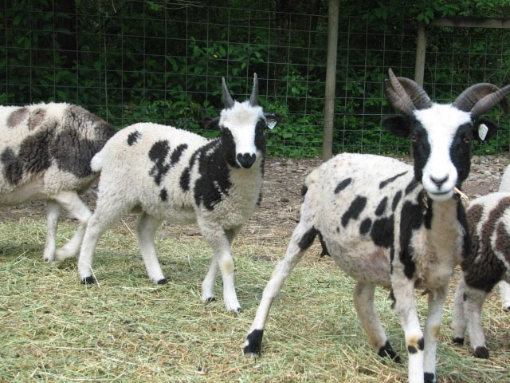

God told Jacob he would return: Gen 28:15. But when?
A desire to return: 30:25
Circumstances warrant returning soon: 31:1
God tells him to return now: 31:3
His wives confirm the wisdom of returning now: 31:16
Jacob returns: 31:21
Dominant DNA

30:25 Jacob feels it might be time to return.
30:27 Again, the Lord blessed Laban for Jacob's sake, just as
he blessed Abimelech 2 for Isaac's sake. (And Abimelech 1 for
Abraham's sake.)
30:30 But Jacob has wives and children, and no assets as of yet.
30:31 So he stays longer to work for some livestock.
30:32 The speckled and spotted would be dominant (and brown goats), and
Jacob may have had some idea of genetics. This arrangement
gave him 75% of the increase. The "pure" sheep and goats were more
highly prized - hence Laban agrees to the deal.
30:37 On the other hand, the rods seemed to be superstition. God tells
him later in a dream (31:10) that it was His doing, not Jacob's.
But some commentators believe that this was a symbolic act at
God's instruction, although not mentioned in 31:10.
30:41 While the dominant genetics would get him the majority of the
flocks, Jacob's thought that the rods would get him the strongest
of the flocks as well. There is no known basis for this today,
but the ancients had a number of secrets we've never figured out.
Or Jacob was superstitious.
30:43 In any case Jacob obtained plenty of assets.
Time to Leave
31:1 And now the sons of Laban are openly envious.
31:2 And Laban is not as thrilled with Jacob. Circumstances indicate
that now is the time to return. He has assets, and is losing his
welcome.
31:3 And now God confirms that it is time to leave.
31:4 Jacob also consults with his wives to confirm that he really
heard from God. Important principle: God doesn't mind repeating
himself. If you hear from God, don't be afraid to ask for
confirmation.
31:14 Laban did not provide anything for his daughters.
31:16 So the wives are ready to go also.
31:19 In addition to divination, the teraphim were used like a
deed to the property of Laban. Rachel was scheming to obtain
the inheritance due her. Sound familiar?
teraphim: image of a man used for divination
Genesis 31:34 sometimes portable
Judges 18, Ezekiel 21:21, Hosea 3:4 used for divination
1 Samuel 15:23 condemned
1 Samuel 19:13 shape of a man
Zechariah 10:2 false information
31:20 Jacob left when Laban was 3 days journey away for sheep
shearing. Genesis 30:36
31:22 Laban is mad - first at not saying goodbye (31:27),
second at losing his teraphim (31:30).
31:24 As promised, God is still looking out for Jacob wherever he
goes.
31:43 Laban: Why should I destroy my own daughters and (former) wealth?
31:44 Once again, a covenant.
31:54 As with Abraham and Isaac with Abimelech, Jacob makes a covenant,
offers a sacrifice, and eats a feast to celebrate the covenant.
This pattern is repeated with the Passover and the Lord's Supper.